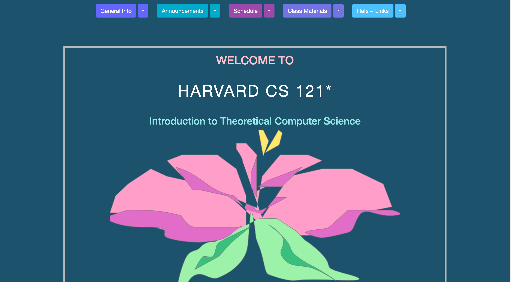

Redesigning Harvard
For a project in my UI/UX class, I redesigned the course website for one of Harvard University's computer science courses to practice the workflow of redesigning a simple website.
Original Website

My Inspiration
(Brown's CS course's website)
Redesigned Website
Here are the steps I took to accomplish this:
- I indentified usability and accessibility problems
- I created a low-fidelity wireframe based on the usability and accessibility problems identified
- I designed a high-fidelity prototype inspired by the course website of my own CS course at Brown.
- I created a visual design guide to explain my design decisions
- I actualized my high-fidelity prototype into an HTML/CSS website